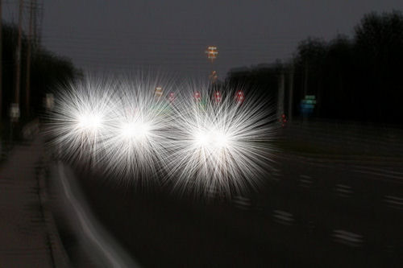
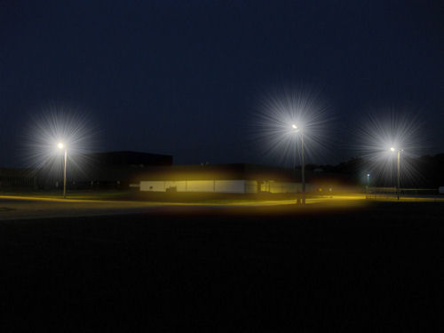
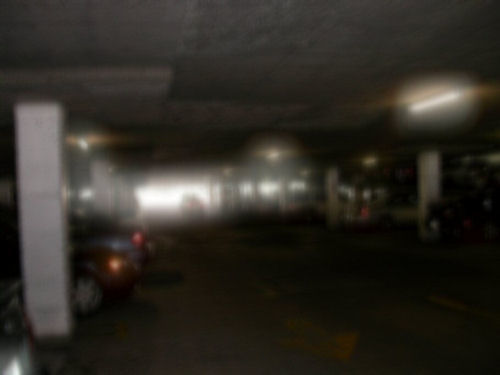
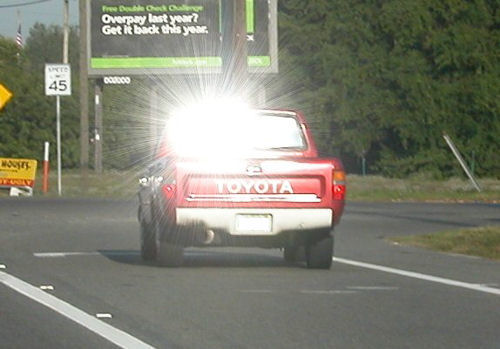

Неровности роговицы широко варьируются у пациентов с LASIK. Следовательно, визуальные аберрации, о которых сообщает LASIK пациенты также сильно различаются. Пациенты могут жаловаться на нечеткость зрения, призрачные изображения, вспышки звезд, размытое зрение, ореолы вокруг источников света или освещенных объектов и потерю контрастной чувствительности (неспособность различать детали при тусклом освещении). Очки и мягкие контактные линзы не могут исправить эти отклонения. Некоторые пациенты, перенесшие операцию LASIK, сравнивают свое зрение с ношением грязных, неудобных контактных линз неправильной силы, которые постоянно прилипают к глазам. Даже у пациента, которому хирург объявил, что операция прошла успешно, могут в некоторой степени наблюдаться нарушения зрения, подобные тем, которые показаны ниже.
Пациенты с нарушениями зрения после операции LASIK могут использовать тренажеры для улучшения зрения, чтобы поделиться своим видением с друзьями, семьей, врачами и адвокатами. Перейдите к тренажерам для зрения.
Пациенты, которые испытывают нарушения зрения или другие осложнения после LASIK, должны отправьте отчет о медицинском наблюдении с Управлением по санитарному надзору за качеством пищевых продуктов и медикаментов. Вы также можете позвонить в Управление по санитарному надзору за качеством пищевых продуктов и медикаментов по телефону 1-800-FDA-1088, чтобы сообщить об этом по телефону, или загрузить копию бумажный бланк и отправьте его по факсу на номер 1-800-FDA-0178 или по почте, используя адресную форму с оплатой почтовых расходов. Ознакомьтесь с образцом Отчеты о травмах, полученных с помощью LASIK в настоящее время находится на рассмотрении в FDA.
Примеры нарушений зрения после операции LASIK



